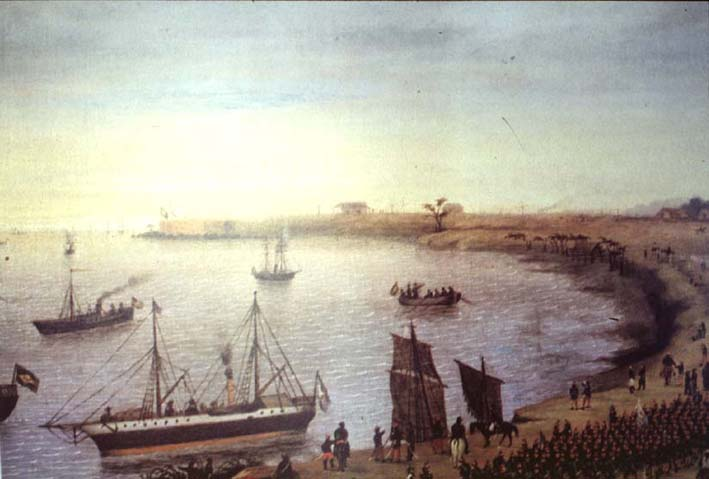

|
|  |
|
Cándido López, Llegada del Ejérctio Aliado a la fortaleza de Itapirú el 18 de abril de 1866
|
Whereas in Chile the nation's victorious wars against neighbours Peru and Bolivia almost instantly became an important source of national iconography and material for military and historical museums, in Argentina and Brazil the War of the Triple Alliance (1865-70) against Paraguay was much m,ore difficult to assimilate into national memory. First and foremost, the lengthy, expensive and bloody assault had never been a popular one, and regional sensibilities recommended to avoid references to it at events such as the Continental Exhibition of Buenos Aires in 1882, whose historical commission was explicitly instructed not to make any mention of it in their exhibition on the history of Argentina. But veterans' associations were editing journals of written and visual testimonies even towards the end of the century, and the painter Cándido López, who had lost an arm at the battle of Tuyutí, between 1892 and 1896 created a large serious of extraordinarily detailed paintings based on his experiences on the front, which he donated to the Argentine government.
|